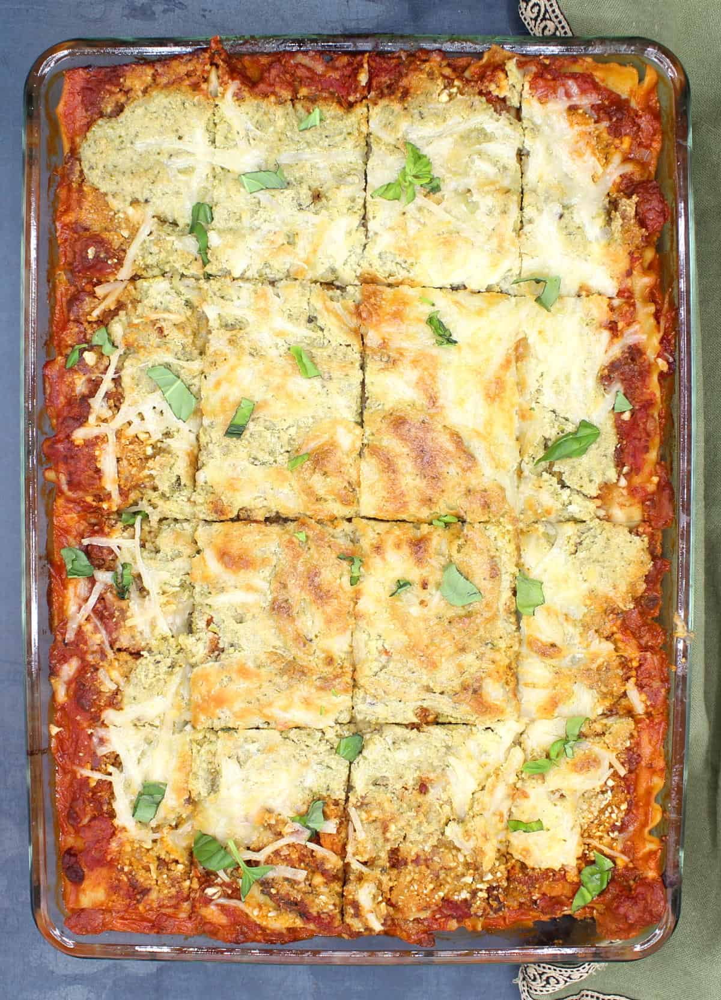

Back to Odin Recipes Homepage
What about Dinner? Vegan Lasagna, of course!

Description
Looking for a change from your usual diet? Well then, let's try out a vegan lasagna, shall we? This bad boy will taste exactly like a traditional one, but it is meatless and dairy-free.
Lasagna sheets are layered with creamy, tofu-free ricotta cheese, homemade vegan parmesan, vegan mozzarella shreds, and a meaty marinara.
What? Feeling stuffed already? That's the spirit! Let's be honest, Lasagna is the perfect comfort food for any kind of occasion or gathering.
Equipment
- Saucepan
- Blender ord food processor
- Lasagna Baking Dish. Their size is usually 23 cm in width, 33 cm in length, and 7.6 cm in depth, but check here for more info.
Basic Ingredients
- Lasagna Sheets, 16 if cooked, otherwise 24 if oven-ready. Various types can be used: regular, whole wheat, gluten free or no boil. If using anything other than no-boil make sure you cook the sheets according to package instructions until al dente.
- Vegan cashew Parmesan cheese, 1 cup. You can use store bought Veg Parmesan, otherwise here is a recipe!
- Vegan Mozzarella cheese shreds, 16 oz. Store bought will do, to save a little time!
- Parsley, 2 tablespoons. Optional, chopped for garnish.
Marinara Sauce's ingredients
- Extra Virgin Olive Oil, 1 tablespoon. So far the best kind of oil one can use for italian recipes. If you don't want to use it for any reason use any other vegetable oil like sunflower, canola, grapeseed or avocado oil.
- Aromatics, 1 large onions, 7 cloves garlic (optional), 2 teaspoons dried oregano, 1 tablespoon fresh basil (optional), 1 teaspoon red pepper flakes (optional).
- Meatless "beef", vegan crumbles or vegan sausages, 28 oz. I have used many different types of vegan meats for this recipe, including Gimme Lean, Tofurky and Field Roast.
Crumble it up before adding it to the skillet so it won't result in any great difference to the final flavour. This time I used a combination of Impossible Beef and Beyond Sausage.
- Canned whole plum tomatoes, 28 oz. San Marzano tomatoes are wonderful for Marinara Sauce, because they are so full of flavour. Otherwise any canned plum tomatoes will do.
Make sure you squish them with a spoon break them down while cooking the sauce.
- 3 Cups of Water or Vegetable Stock
- Salt and ground black pepper to taste
Cashew Ricotta's ingredients
- 1 ½ Cups of raw Cashews, soaked for 30 minutes, then drained.
- Nutritional Yeast, 2 tablespoons. Optional.
- Garlic Powder, 1 teaspoon. Optional.
- Oregano, 1 teaspoon. Optional
- Parsley, ¼ cup, chopped.
- Salt and ground black pepper to taste
- 1 Cup Water
Steps - How to make it
- Prepare the Meatless Sauce: eat the oil in a large saucepan (optionally with crushed garlic). Add the onions. Saute, until they soften, for about 5 minutes. Add the "meat" and saute for a couple of minutes to brown.
Add the plum tomatoes to the saucepan and squish them, along with 3 cups of vegetable stock if using no-boil noodles, and 2 cups of stock if using regular noodles that have been cooked.
Stir well, bring to a boil, add the oregano, red pepper flakes (optional), salt and ground black pepper to taste. Cook the sauce without covering for about 15 minutes or until it turns a bright red. Turn off heat and check seasoning.
- Make the cashew Ricotta cheese: place the cashews in a food processor with all ingredients. Process for a couple of minutes until fairly silky smooth.
- Cook the Lasagna sheets: cook them according to package's directions unti al dente but, not mushy! If you are using no-boil sheets do not cook them.
- Preheat the oven to 205° Celsius / 400° Fahrenheit.
- Assemble the Lasagna: brush or spray a lasagna pan with the oil. Ladle out a small amount of sauce into the pan and spread. Layer on 4 sheets into the bottom of the pan.
If using no-boil sheets, which are smaller than the regulars, you might need to layer on 5 sheets vertically and 1 more horizontally. Then proceed as follow:
- Layer on one-fourth of the meat sauce over the lasagna sheets.
- Layer on one-fourth of the cashew Parmesan.
- Layer on one-fourth of the shredded vegan Mozzarella.
- Layer on one-fourth of the cashew Ricotta.
- Repeat until you have built up 3 layers of the meat sauce and the cheeses. Over the 4th and final layer, layer the remaining meat sauce, Parmesan and Mozzarella.
- Bake the Lasagna: cover the baking dish with aluminum foil, place the Lasagna pan on a rimmed baking sheet, and bake in the preheated oven for 30 minutes.
After 30 minutes, remove the aluminum foil and bake another 30 minutes until bubbly and hot. Let the Lasagna stand at least 15 minutes to firm up, then cut and serve.
Original recipe by Vaishali can be found at Holy Cow Vegan